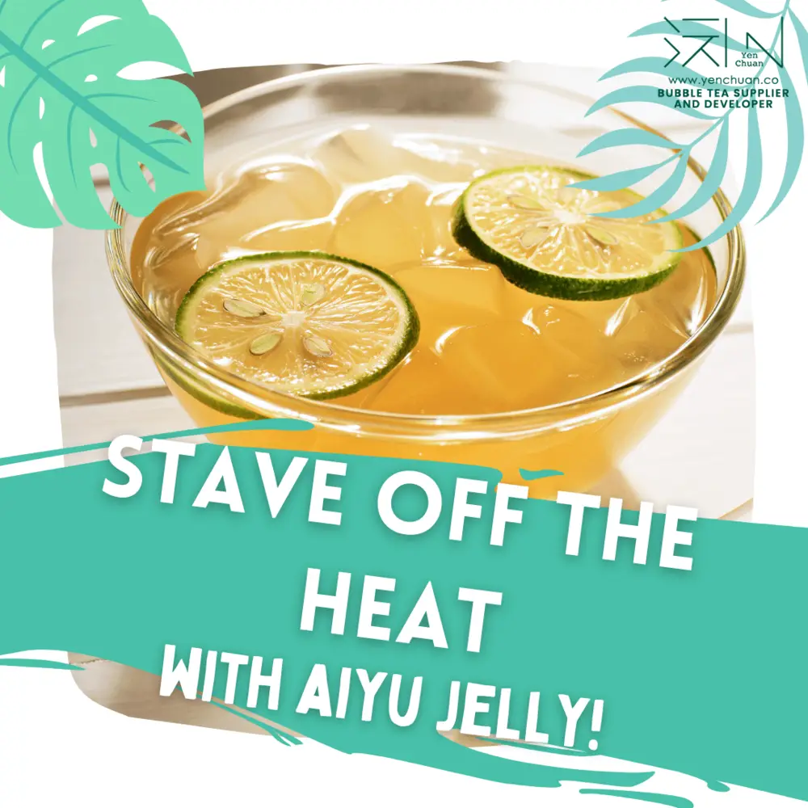
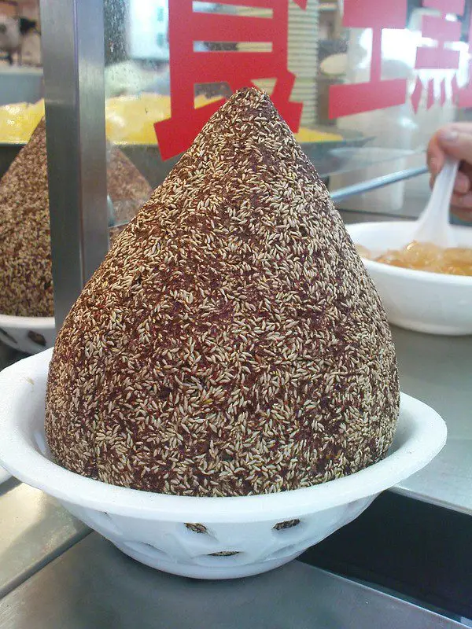
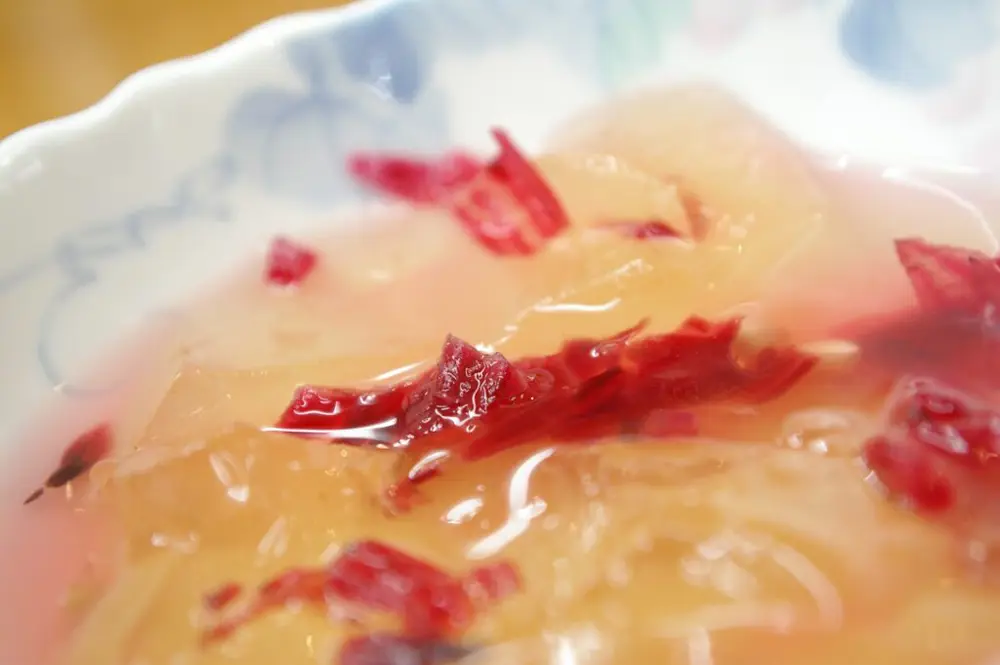
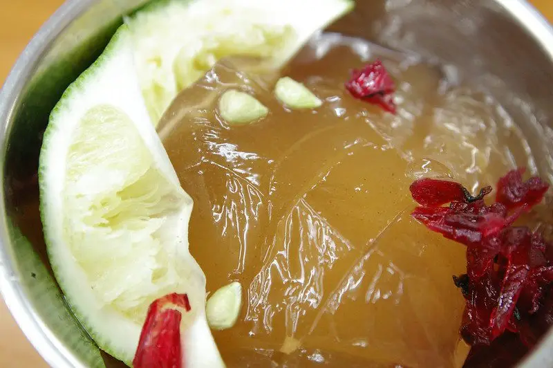

Articles / Tips & trends
Stave off the heat with aiyu jelly!
2021-06-23 · News, Tips and Trivia

Original public content from Yen Chuan. Product claims and specifications remain subject to confirmation by the company.
When you visit Taiwan during summer, you’ll often see people queuing up for a refreshing ice desserts to stave off the burning heat. Aside from ice-cream and shaved ice, there’s also one very popular and unique dessert – aiyu jelly!
This is no ordinary jelly – aiyu jelly is unique mainly to Taiwan!
Want to learn more about this classic Taiwanese dessert? Read on and find out!

What is aiyu jelly?
Aiyu jelly is made from the seeds of the Ficus pumila var. awkeotsang, otherwise known as the Awkeotsang creeping fig.
By rubbing the fig seeds in water, a gel can be extracted which is then processed into aiyu jelly. This jelly has a distinctive yellowish colour, similar to green tea jellies.
Legends say that the jelly was discovered by a businessman in Chiayi, who stumbled across the gel when he drank from a creek while travelling. His daughter sold desserts made from this jelly, and people named the jelly after her – Aiyu.
What’s so great about it?
Unlike most jellies which are often laden with sugars and artificial flavours, aiyu is a plant-based healthy alternative. It’s full of vitamins and dietary fibres, which helps reduce cholesterol.
It’s also low-calorie and has high water-content, making it a great diet-food too! Want to lose weight but still want delicious desserts? Aiyu’s got your back!


How do you serve aiyu?
The classic way is to sweeten the jelly with sugars or honey, then serve in a bowl with slices of lemon/limes. Some add lemon juice into the honey for an extra lemony kick!
However nowadays the jelly has evolved beyond being just desserts. Now you can also find it in bubble tea shops as a topping for green tea, fruit teas and lemonades. Healthy, yet delicious!
That sounds great, where can I find it?
Being a very Taiwanese dessert, aiyu jelly can get a bit hard to find outside Taiwan….or is it?
With our range of aiyu jelly powders, trying out this jelly can’t get any easier!
It’s easy to prepare as well, just mix it with hot water and let it cool down to set.
Ready to have a taste of Taiwanese summer?